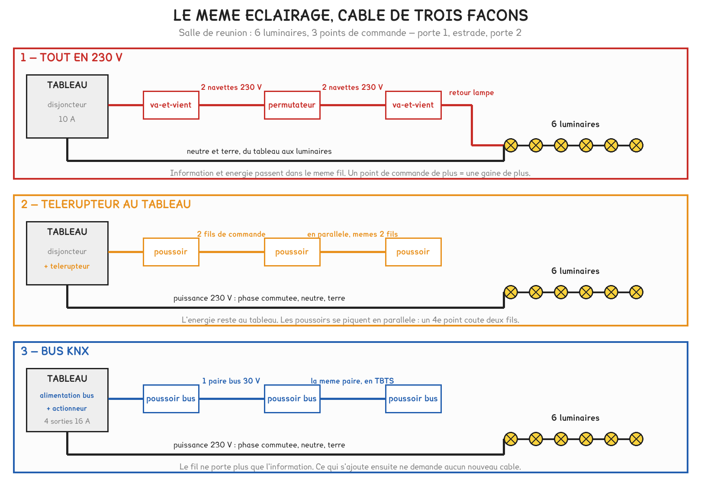
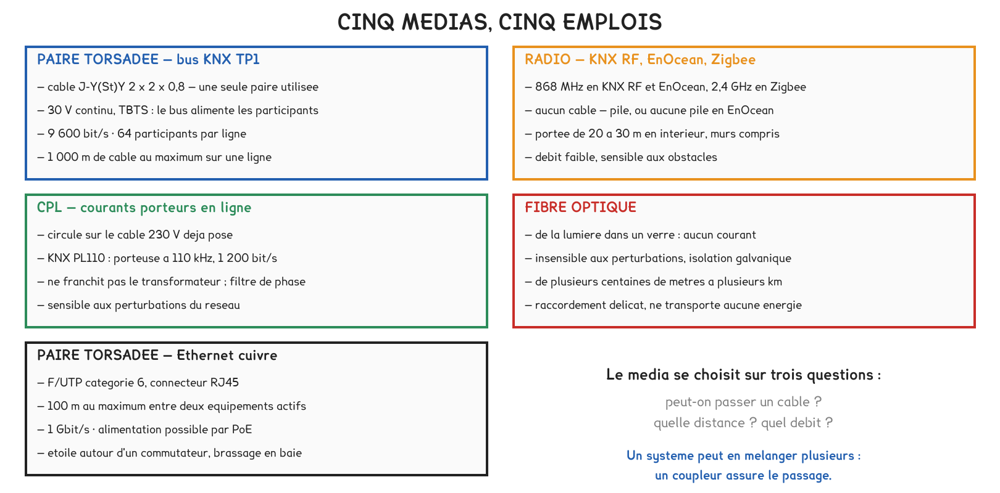
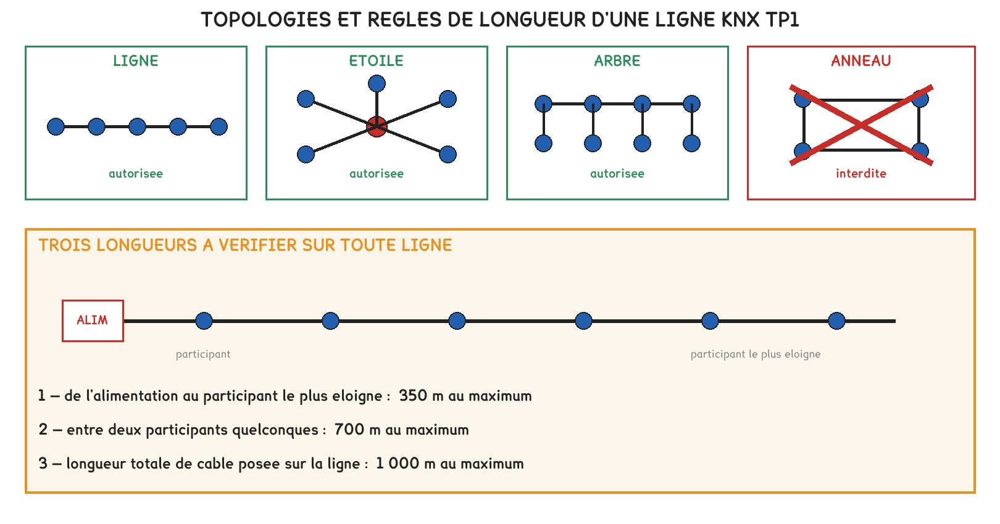
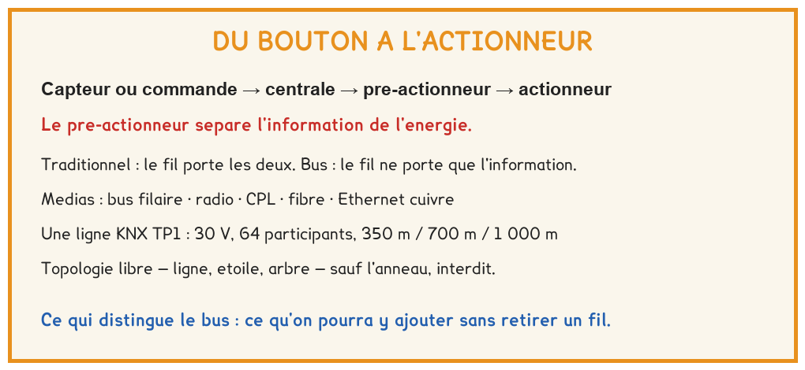

BTS FED option C · 1re année
Trois câblages pour le même éclairage, et la seule question qui les départage : combien de câbles faudra-t-il tirer le jour où le client demandera autre chose ?
2 outils · 6 questions · 4 exercices · 2 replis · 5 figures
Savoirs travaillés
La séance a porté sur une salle de réunion comportant six luminaires et trois points de commande, câblée de trois façons : tout en 230 V, au télérupteur et sur un bus KNX. Le métré ne permet pas de départager les trois solutions ; il donne même l’avantage à la plus ancienne.
Ce qui les distingue n’apparaît que plus tard, lorsque le client demande une modification.

En câblage traditionnel, le même fil porte l’information et l’énergie. Avec un télérupteur, l’énergie reste au tableau. Avec un bus, le fil ne porte plus que l’information, et ce qui s’ajoute ensuite se raccorde sur la paire déjà posée.
Le bus ne se justifie donc pas par une économie de cuivre, mais par le droit de changer d’avis sans rouvrir un mur.
Les fils qui montent aux poussoirs d’un télérupteur ordinaire sont en 230 V, car sa bobine l’est aussi. Seul le bus est en TBTS, 30 V continu. Un circuit de commande n’est pas pour autant un circuit sans danger.
Le pré-actionneur reçoit un ordre en petite puissance et établit ou coupe la puissance : relais, contacteur, télérupteur, variateur. L’actionneur transforme cette énergie en effet : lumière, mouvement, ouverture.
Les fabricants commercialisent des « actionneurs KNX ». Dans la chaîne fonctionnelle, ce sont des pré-actionneurs : l’actionneur est le luminaire ou le moteur. C’est le vocabulaire du référentiel qui fait foi à l’examen.
Pour aller plus loin
En KNX, il n’y a pas de centrale obligatoire. Chaque participant décide seul à partir du télégramme qu’il reçoit : le système est décentralisé. La centrale n’apparaît que pour la supervision, l’IP et les passerelles.
C’est ce qui distingue ce système d’un automate à modules d’entrées-sorties, où tout remonte à l’unité centrale et où la panne de celle-ci arrête la commande. Les deux architectures coexistent dans un même bâtiment ; la GTB, étudiée en deuxième année, repose sur cette coexistence.

Le choix se fait sur trois questions, dans cet ordre : peut-on passer un câble, quelle distance, quel débit.
| Situation | Le média qui s’impose |
|---|---|
| Neuf, avant les cloisons | bus filaire TP1 |
| Rénovation occupée, sans saignée | radio : KNX RF, EnOcean |
| Le 230 V existe, le budget est serré | CPL |
| Au-delà de 100 m, ou en milieu perturbé | fibre optique |
| Caméras, écrans, supervision | Ethernet cuivre, moins de 100 m |
Pour aller plus loin
Le câble TP1 ordinaire n’est pas isolé pour 230 V. La NF C 15-100 n’admet la cohabitation dans un même conduit que si tous les conducteurs sont isolés pour la tension la plus élevée.
Il existe des câbles bus à isolation renforcée, prévus pour cela, et plus chers. Une seconde raison, d’ordre technique plutôt que réglementaire, s’y ajoute : les perturbations conduites par le 230 V dégradent la transmission sur le bus.

350 m · 700 m · 1 000 m
Toute topologie est acceptée (ligne, étoile, arbre) sauf l’anneau.
Les deux limites d’une ligne sont atteintes ensemble : 64 participants consomment exactement 640 mA. Au-delà, une ligne pleine ne s’allonge pas : il faut en créer une seconde, avec son coupleur et son alimentation.

Exercice · D2-1
Une ligne KNX TP1 part de son alimentation. Les longueurs de câble posées : alimentation → boîte de répartition, 45 m ; répartition → bout de la branche principale, 260 m ; bout de cette branche → antenne des combles, 80 m.
À quelle distance de l’alimentation se trouve le participant le plus éloigné ?
Exercice · B8-1
Une ligne compte 43 participants. Chacun consomme 10 mA sur le bus.
Quel courant l’alimentation doit-elle fournir ?
Exercice · D1-1
Il faut relier la supervision du bâtiment principal à l’automate d’un local technique situé à 400 m, en extérieur, le long d’un poste de transformation.
Quel média retenir ?
Exercice · B8-1
Un client vous demande pourquoi le variateur et le luminaire ne sont pas rangés dans la même famille. Répondre en trois ou quatre lignes.
La séance suivante apprend à lire un dossier de courant faible : schémas, repérage des câbles, carnet de câbles et tableau de communication. Elle suppose acquis le vocabulaire de la chaîne et les trois façons de câbler. Les adresses de groupe viendront en semaine 11, une fois le réseau construit.
Cette page rappelle la séance. Elle ne remplace pas le polycopié et ne donne aucun corrigé. Tous les calculs se font dans votre navigateur ; rien n'est enregistré.